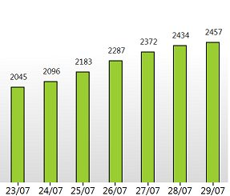
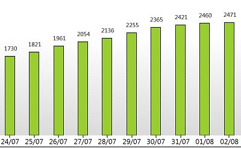
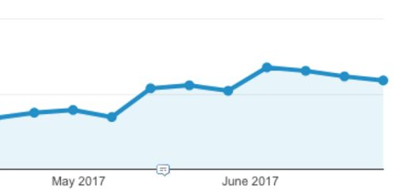
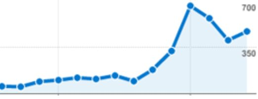
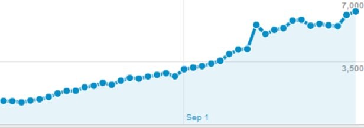

Discover The Best Social Media Poster That Newbies Are Using to Drive 500+ Visitors Per Day Using 100% FREE Traffic to Their Sites
Confused about how to drive traffic to your site from social media? Between information overload, misinformation and everyone with their hand out wanting to take your money, it’s really no wonder.
95% of online businesses that fail, do so for one reason only.
They have no idea how to drive traffic to their sites!
And that is understandable. It’s hard to know it all. You think that if you offer a great product people will just come. Unfortunately we don’t live in a perfect world so it will never be that easy.
You need to bring traffic to your site no matter how good it is, that’s a fact.
You’ll also need to make sure you don’t spend all your time doing just this. There are so many ways to get traffic out there that it can be overwhelming. That is why it’s extremely important to start with the correct one or you’ll just lose your way and end up failing.
Taking the 3 main traffic driving methods:
- Social media marketing
- SEO
- Paid advertising
Have you tried doing paid ads lately? You need to get a license just to navigate all the hundreds of features they have. After you have a decent understanding of everything comes the hard part though. You’ll have to tweak and take care of all the small details daily just to break even. And if you’re not careful you can spend all your money without getting a single conversion.
Don’t get me started with SEO. It’s amazing, it really is! But that’s only if you know how to do it and can afford to wait 6 months to see the results. Tough luck if you didn’t do it right, you’ll just have to start all over.
I’ve build and promoted many sites during the last 7 years. I’ve tried it all: SEO, social media, guest posts, blog commenting, forum posting, article marketing, paid ads, videos and anything else you can think of.
When I looked back, I realized the one that always worked for me was: Social Media.
Why? Simple! Because you get results fast. You don’t have to wait 4-8 months for your link building to start working. You can get your first clients the very first day of starting with social media marketing. Also you don’t need to pay for anything like you do with paid ads.
Have you seen that everyone and their grandmother is on social media these days? Basically if you don’t have a social media presence you don’t exist!
This has a drawback though, it’s not like it was in the beginning. You cannot just create your social media accounts and wait for people to come. You need to grow and promote them. In turn they will send people to your business.
The struggles of growing your social media accounts.
The title says struggles – but it really doesn’t has to be one. You can grow your accounts easily and almost automatically if you know how. Read on and I’ll explain everything.
Do you have more than one social media account? You should!
You should have at least one each of the main ones: Facebook, Twitter, Pinterest, Google+, LinkedIn, Instagram.
Now you’ll have a problem though, if you want to post one single post to each of them it will take you 5-10 minutes to do so. You will need to login to each of your accounts, prepare the post and publish it.
How about actually growing those 6 accounts? That will take even more time! Not to mention you also need the know-how.
This is where most people give up due to lack of time. It’s really time consuming to maintain all these accounts or even read how to properly grow them all.
You are lucky though. I will let you in on a little secret. One that marketers have been keeping to themselves for several years now:
You don’t have to do all of this manually!
Just think about it. Most of the social media tasks you need to do are always the same. Repetitive actions that can be automated and do not need human interaction.
Why login to 6 different platforms to publish a post when you can do that from one single place?
Not only that, but you can also schedule unlimited posts in advance.
You want 2 posts per day at certain times of the day? Nothing simpler! Create 14 posts, schedule them all and they will be automatically posted for you.
It sounds too good to be true, but this is just the tip of the iceberg. You can actually automate the growing of your accounts and just sit back and watch them grow.
Now what was I saying about you “don’t need to struggle to be successful in social media”?
Select people have been using this system for several years now and made a killing with it.
It was a private tool for a long time but since times are changing and social media is growing more and more I do think there’s enough room for everyone so it’s time for it to see the light of day.
People will be upset for losing their secret weapon but that’s good news for you since you’re in a unique position to take advantage of it as well.
Just see some of the results they had using it in private.
This one is an account – completely automated for 1 month. This one doubled the number of followers in just a month!

Here’s another for a week only, this niche was so easy!

And one more that used this tool for 10 days, another great niche that grows fast.

Here’s a 3 months old account that only had 50 followers when it was added. Check how much it grow it one month!

Here’s what it can do with a twitter account in a month:

And another one :

And if you didn’t have enough here’s another :

I am showing you just how easy it would be to grow your social media accounts.
You’re probably asking right now : “Ok, but what has this to do with traffic?”
My reply : “Growing your accounts like this is golden!”
This means that you will have a constant influx of new people checking your account. These people will also check your site and will create traffic.
Having many followers also means you can re-use them any time you want. Just post something new to your accounts and these people will see it.
If they like what they see they will also share it with their friends and family, thus bringing even more people to your site.
Here’s what social media can do for your traffic:



A constantly increasing stream of FREE traffic awaits! It’s up to you to take advantage of it.
Here’s what some of the people using it all this time had to say about it.
I can’t believe how much time I wasted last year doing everything by hand when most of the tedious tasks could have been automated. Thank you Jarvee, you’ve given me back control of my time! – Ralph Graphic Designer
The tools is great, however what is actually amazing is the support. I was a complete beginner and had so many questions. The Jarvee support team always responded with helpful advice, most of the times within a couple of hours. I am forever in your debt for that! – Zoe K. Work at home mom
This tool rocks! I fell in love with it since I tried it the first time. I don’t know what I would have done without it! – Mark N
I started managing clients accounts 2 years ago. I had a few clients and was barely managing everything. Since I found Jarvee I increased the number of clients I have to 32 and I still have free time for myself! This literally saved my life! – John B. Social Manager
A friend recommended me this tool, I was skeptical at first but I just wanted to say: This works!!! It’s incredible how my account started to grow in just a few weeks. – Sonia Q Fashion Blogger
Most responsive and helpful support team I have ever seen! It baffles me how you’re always so fast when I report a problem or have a question. You have a lifetime user in me! – Brian Marketer.
I’ve added 10 twitter accounts and set all the tools to run on medium settings. Did nothing else for 3 months, never even looked at the accounts. When I checked again after the 3 months I had between 3000 and 7400 followers on each of the 10 accounts. Now I wish I’d set 100 accounts instead of 10. Jarvee really does its job right. – Pete CPA manager
I never had this much interaction on my accounts and I thought it was because of my niche, boy was I wrong… I just needed the right tool for the job, now it’s more of a managing gig than a manual labor one, exactly what I needed. – Eva M. Social Media Manager
So, what exactly can JARVEE do for you?
- Drive unlimited traffic to your site – social media can be an unlimited source of FREE traffic. Set Jarvee to post and grow your accounts and sit back and watch the traffic coming in.
- Save you up to 85% of the time you were spending doing social media – most of the tasks you were doing are repetitive and boring. You can automate all of them easily inside Jarvee all from one easy-to-use dashboard.
- Grow your social accounts on auto-pilot – for many people getting new follows to their social accounts is a hard task. Not for you if you use Jarvee! Most of its tools are set and forget. Pick the best settings for your nice and Jarvee will do the rest.
- Get more social recognition – by having your accounts constantly active and growing your social presence will increase and your business will reach more and more people.
- See your accounts growing with the aid of beautiful reports – there’s nothing that makes me happier than checking the graph and seeing how my accounts grew. I bet this is the case with everyone so you’ll definitely love this feature. It will probably be the first thing you check each day.
- Succeed with social media – this is the most important thing and it’s what we all want. Having a personal assistant like Jarvee do all the manual labor for you will give you more time to focus on your business and make it work.
No-hassle, Zero-risk, 5 Days FREE Trial
I am offering you a fully functional FREE trial for the first 5 days.
Check it out ! See what it can do and play around with its features. I am sure you’ll fall in love with it like almost everyone that ever tried it.
If you’re serious about succeeding online this is your chance to do it. Don’t miss it as it might not come again!
Remember this was a private tool for years and it might go back to being one in a short while. Be among the select few that can access it and make a killing online.
To put it bluntly : You Really Can’t Afford Not To Invest In This Program!
Your small investment in Jarvee could amount to huge results in your traffic and business,
So sign up right away.
Simply click the Get One Month button below, right away, while you’re on this page.